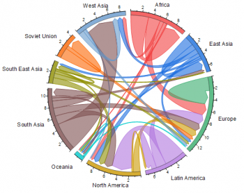
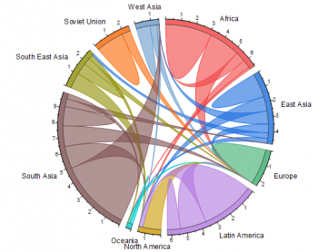
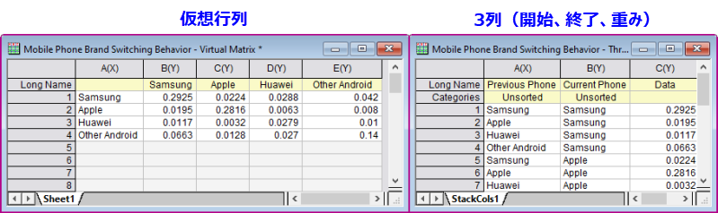
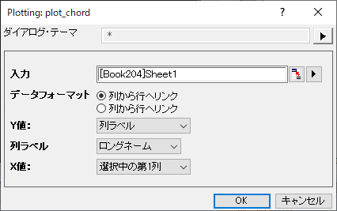
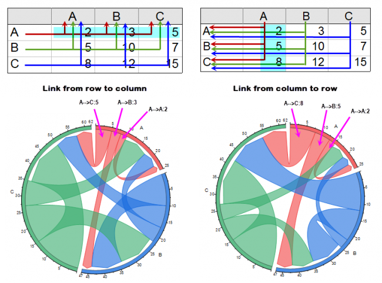

コードダイアグラム/コードダイアグラム（比率レイアウト）
Chord-Diagram
| 
|

|
| コードダイアグラム
|
コードダイアグラム（比率レイアウト）
|
必要なデータ
データは2つの形式で配置できます。
- 仮想行列：入力ノードと出力ノードが行と列にある仮想行列。
- ワークシート：3列の値の列を持つワークシート。最初の2列がカテゴリであり、「開始」ノードと「終了」ノードがリストされている。3番目の列は数値であり、「重み」測定値が含まれる。
- 
グラフ作成
- データを選択します。
- メニューから、を選択します。
コードダイアグラムの作図
値のブロックを選択した場合、最初の2列がテキストでもカテゴリでもない場合、またはデータを選択しなかった場合は、Xファンクションダイアログがポップアップ表示されます。

入力
仮想行列のブロックと同様に、入力ブロックを指定します。
データレイアウト
リンクの流れの方向を指定します。
- 列から行へリンク：リンクは行の指定された値から始まり、リンクは列の指定された値で終わります。
- 行から列へリンク：リンクは列の指定された値から始まり、行の指定された値で終わります。

X値/Y値
データレイアウト設定に従って、選択したブロックのX値とY値を指定します。
一般に、流れはX値から始まり、Y値で終わります。つまり、X値はリンクの開始点であり、Y値はリンクの終了点です。
列
ドロップダウンリストのX値/Y値の列ラベルを選択した場合、XまたはY値*（リンクの開始またはリンクの終了）を格納する列ラベル行をさらに指定できます。
X範囲/Y範囲
ドロップダウンリストのX値/Y値でカスタムを選択した場合は、XまたはY値*（リンクの開始またはリンクの終了）を格納する範囲をさらに指定できます。
テンプレート
chord.otpu (EXEフォルダにインストールされています。)
ChordRatio.otpu (EXEフォルダにインストールされています。)
ノート
- コードダイアグラムとコードダイアグラム（比率レイアウト）の設定の違いは、作図の詳細ダイアログのレイアウトタブにある比率レイアウトにチェックを入れるどうかです。
- 比率レイアウトにチェックを入れると、2つのノード間の交換が1つのリンク内に表示されます。 比率レイアウトにチェックされていない場合、交換は、AからBへの流れとBからAへの流れの2つのリンクで表示されます。
- 比率レイアウトがチェックされている場合、事前モードと事後モードのどちらかを選択できます。
コードダイアグラムのの編集ついては、次のトピックを参照してください。